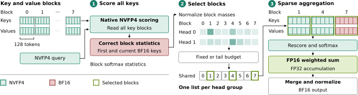

A lawyer on a long case keeps every page of the file, but in shorthand to save shelf space. For each new question they skim all the shorthand quickly, then pull out only the few folders that matter and read those carefully. Skimming everything means nothing is lost; careful reading only where it counts keeps the answer exact.
긴 사건을 맡은 변호사는 서류를 한 장도 버리지 않지만, 공간을 아끼려고 약식으로 적어 둔다. 새 질문이 오면 약식 기록 전체를 빠르게 훑고, 중요한 폴더 몇 개만 꺼내 꼼꼼히 읽는다. 전부 훑으니 놓치는 것이 없고, 필요한 곳만 꼼꼼히 읽으니 답은 정확하다.
How it works: cheap scan, careful read작동 방식은 싸게 훑고 정밀하게 읽기
Precision goes where it changes the output: 4 bits to store and score every key, higher precision only for the values that form the answer.
정밀도는 출력을 바꾸는 곳에 쓴다. 모든 키를 저장하고 점수 매기는 데는 4비트를, 답을 만드는 값에만 더 높은 정밀도를 쓴다.

- Pack.압축 저장.The cache is stored in NVFP4 in 128-token pages; keys are centered by a calibrated mean, and the first and current pages stay in BF16.캐시는 128토큰 페이지 단위로 NVFP4에 저장한다. 키는 보정된 평균으로 중심을 맞추고, 첫 페이지와 현재 페이지는 BF16으로 둔다.
- Scan and select.훑고 고르기.Native FP4 tensor cores score the whole history; query heads that share a KV head pick one list of N blocks.FP4 텐서 코어가 전체 기록에 점수를 매기고, KV 헤드를 공유하는 쿼리 헤드들은 블록 N개짜리 목록 하나를 함께 고른다.
- Aggregate.값 모으기.The weighted sum runs only over the selected blocks, in FP16 with FP32 accumulation; prefill uses FP8 in a temporary buffer.가중합은 고른 블록에서만 FP16으로 계산하고 FP32로 누적한다. 프리필은 임시 버퍼에서 FP8로 처리한다.
Key point: agents expose what short tests hide핵심은 에이전트 과제가 짧은 시험이 숨기는 것을 드러낸다는 것
On SWE-bench Verified, Jet-QSparse matches BF16 with 29% of its KV bytes, while Quest collapses. SparQ also holds accuracy but needs 1.5× BF16's memory.
SWE-bench Verified에서 Jet-QSparse는 KV 바이트의 29%만으로 BF16과 같은 수준을 내지만, Quest는 무너진다. SparQ도 정확도는 지키지만 BF16의 1.5배 메모리가 든다.
Results: faster decode, more requests per GPU결과는 더 빠른 디코딩과 GPU당 더 많은 요청
At 128K context and batch 16, the 64-block setting speeds up decoding on all four hybrid models, most on the Qwens.
128K 맥락, 배치 16에서 64블록 설정은 하이브리드 모델 네 개 모두의 디코딩을 빠르게 하며, Qwen에서 가장 크다.
On the MoE Qwen, only Jet-QSparse is both faster and smaller than BF16 without losing agent accuracy.
MoE Qwen에서 에이전트 정확도를 잃지 않으면서 BF16보다 빠르고 작은 방법은 Jet-QSparse뿐이다.
| Method | AIME25 | TB 2.1 | SWE-V | Decode | KV |
|---|---|---|---|---|---|
| BF16 | 91.8 | 41.6 | 68.5 | 1.00 | 1.000 |
| Jet-QSparse | 91.2 | 41.2 | 70.6 | 1.57 | 0.289 |
| Quest | 76.1 | 22.1 | 19.4 | 1.32 | 1.050 |
| SparQ | 91.1 | 40.1 | 69.3 | 1.09 | 1.502 |
| TriAttention | 63.7 | 41.9 | 69.3 | 1.00 | 1.000 |
Judge KV compression on agent tasks and completion, not on needle tests: needle retrieval stayed intact while aggregation tasks and SWE-bench dropped under aggressive sparsity. Store and score cheaply, but aggregate values in higher precision.KV 압축은 바늘 찾기 시험이 아니라 에이전트 과제와 완주 여부로 평가하자. 공격적인 희소화에서 바늘 찾기는 멀쩡했지만 정보를 모으는 과제와 SWE-bench는 점수가 떨어졌다. 저장과 점수는 싸게 하되, 값을 모을 때는 높은 정밀도를 쓰자.
"No detected loss" is a statistical claim, and Terminal-Bench cannot resolve losses under about 6 to 9 points. Gains need Blackwell FP4 cores, and with no BF16 sparse arm, sparsity's effect is not cleanly separated from quantization."손실 검출 없음"은 통계적 주장이며, Terminal-Bench로는 약 6~9점 미만의 손실을 가려내지 못한다. 속도 향상은 Blackwell FP4 코어가 있어야 하고, BF16 희소 비교군이 없어 희소화의 효과가 양자화와 깔끔하게 분리되지 않는다.